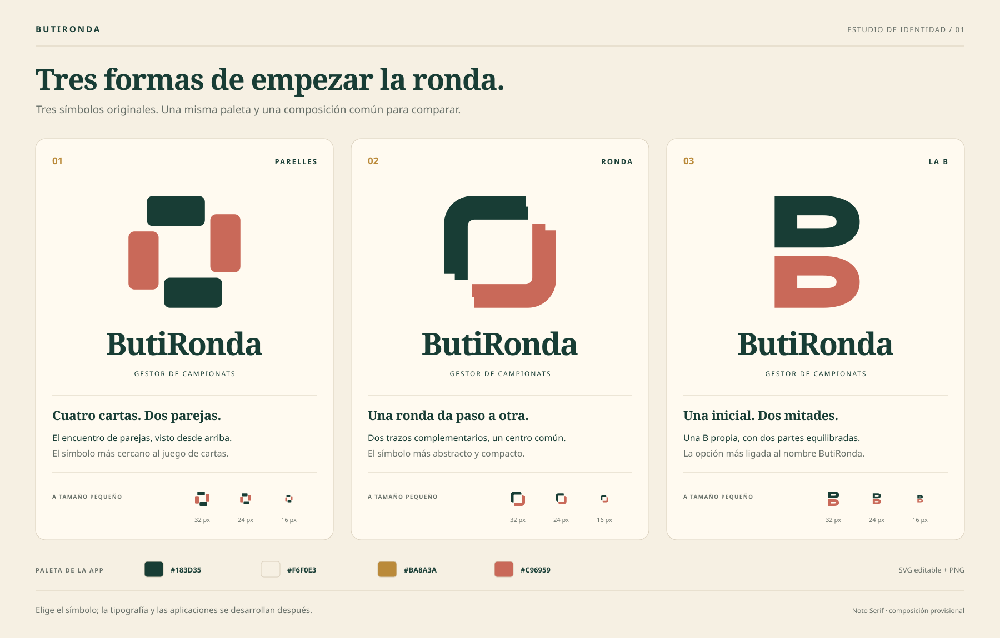
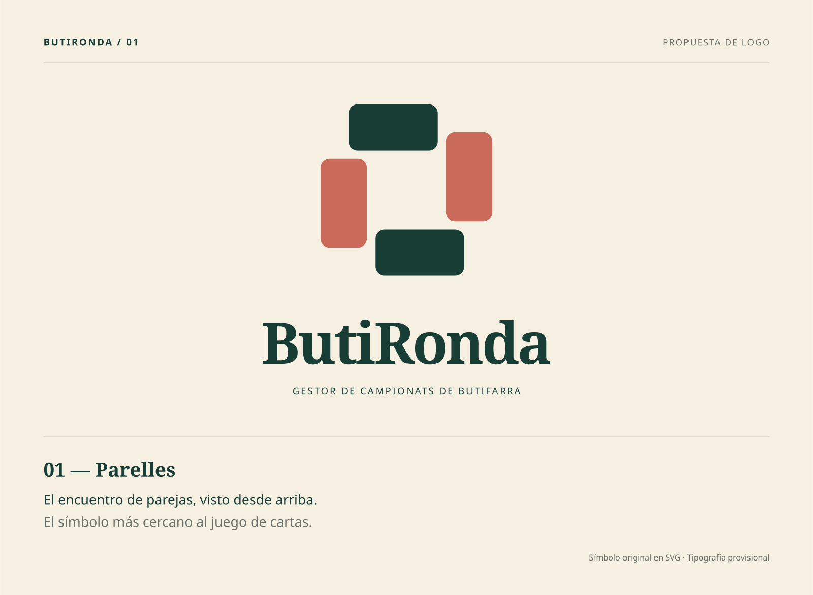
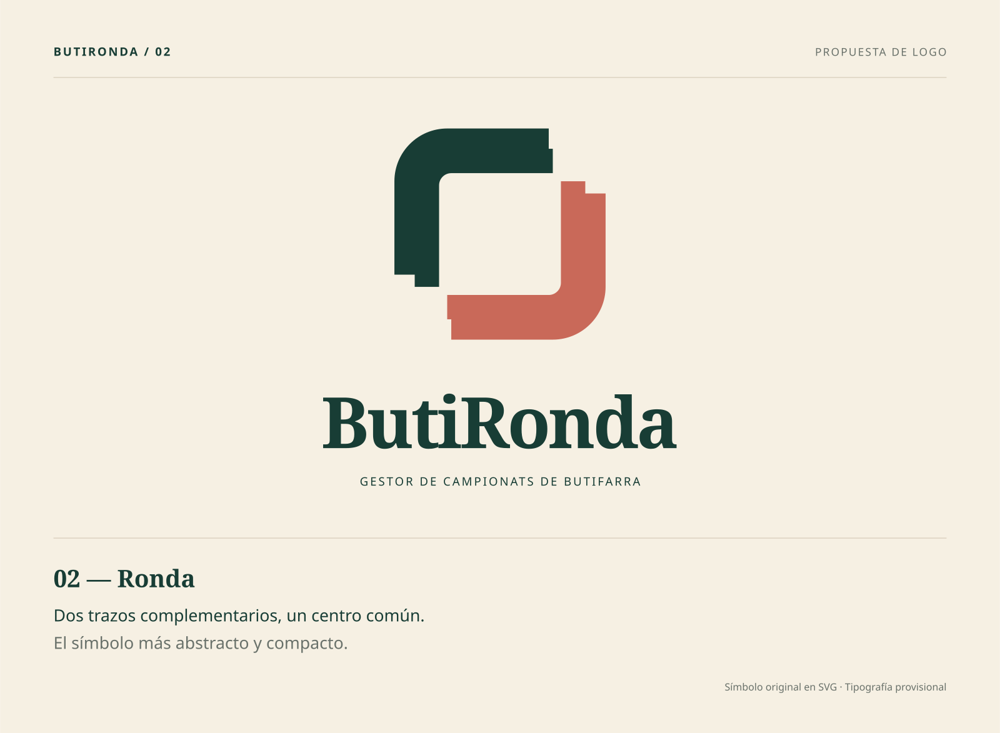
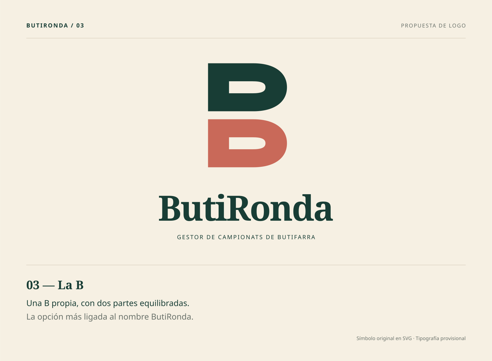

01 · Parelles
Cuatro reversos de carta giran alrededor de un centro abierto. Las cartas opuestas comparten color y forman dos parejas.

02 · Ronda
Dos bandas de igual peso forman un contorno casi cuadrado. Sus encuentros escalonados sugieren continuidad sin recurrir a flechas.

03 · La B
Una B dibujada a medida, con dos lóbulos equivalentes, espacios interiores amplios y una separación central. La letra se sostiene sin una tipografía externa.

Propuestas para elegir. La composición del nombre en Noto Serif es provisional; los símbolos son geometría original independiente de las fuentes.